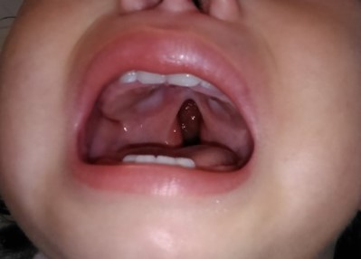
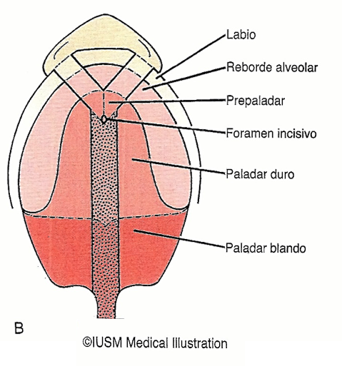
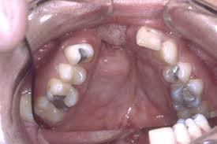
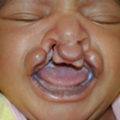

VEAU
Propuso propuso el sistema de utilización más frecuente.
Clasificó las hendiduras en el paladar de la siguiente manera:
Oprima las flechas para ver las diferentes clasificaciones.
Clase I
Involucra solo el paladar blando

Figura A: Área sombreada, alcance de la fisura (Paladar blando).
Tomado de: Vázquez-Mahía I, Patiño-Seijas B. Fisura labiopalatina. En: Sociedad Española de Cirugía Oral y Maxilofacial (SECOM). Manual de cirugía oral y maxilofacial. 2.ª ed. Madrid: Martín-Granizo R (coordinador); 2004: 1347-79.
Clase II
Involucra los paladares blando y duro, pero no el proceso alveolar

 Figura B: Área sombreada, alcance de la fisura (paladares blando y duro).
Tomado de: Vázquez-Mahía I, Patiño-Seijas B. Fisura labiopalatina. En: Sociedad Española de Cirugía Oral y Maxilofacial (SECOM). Manual de cirugía oral y maxilofacial. 2.ª ed. Madrid: Martín-Granizo R (coordinador); 2004: 1347-79.
Clase III
Involucra tanto los paladares blando y duro como el proceso alveolar en un lado del área premaxilar
Figura C: Área sombreada, alcance de la fisura (paladares blando y duro más un lado del área del reborde alveolar).

Tomado de: Vázquez-Mahía I, Patiño-Seijas B. Fisura labiopalatina. En: Sociedad Española de Cirugía Oral y Maxilofacial (SECOM). Manual de cirugía oral y maxilofacial. 2.ª ed. Madrid: Martín-Granizo R (coordinador); 2004: 1347-79.
Clase IV
Involucra tanto los paladares blando y duro, y continúa a través de alveolos en ambos lados del premaxilar, dejándolo libre y a veces móvil
Figura D: Área sombreada, alcance de la fisura (paladares blando y duro más alveolos en ambos lados).
 Figura D: Área sombreada, alcance de la fisura (paladares blando y duro más alveolos en ambos lados).
Tomado de: Vázquez-Mahía I, Patiño-Seijas B. Fisura labiopalatina. En: Sociedad Española de Cirugía Oral y Maxilofacial (SECOM). Manual de cirugía oral y maxilofacial. 2.ª ed. Madrid: Martín-Granizo R (coordinador); 2004: 1347-79.